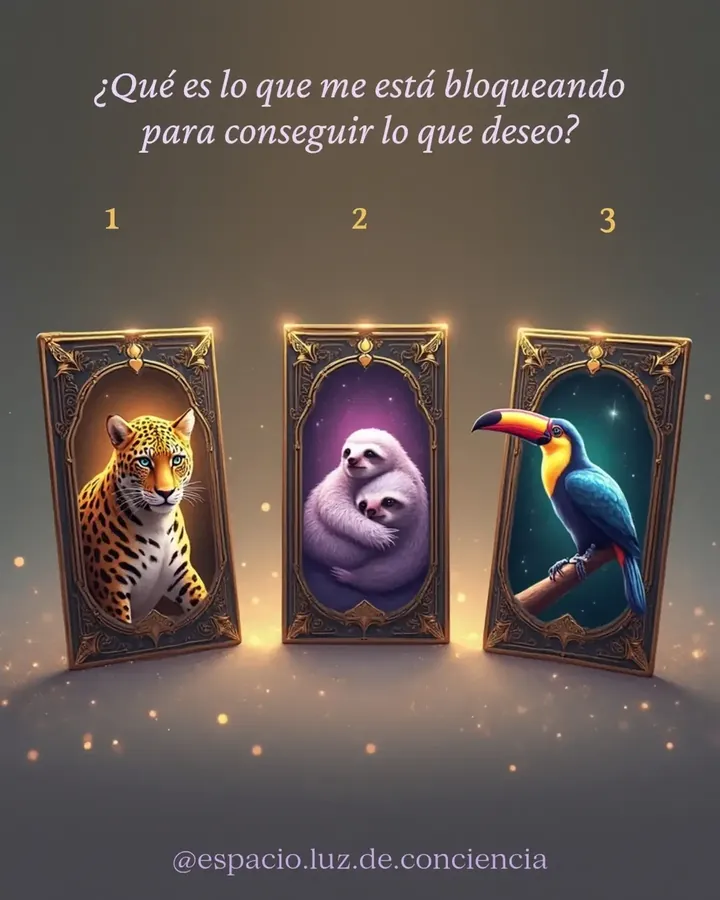
¿Qué me está bloqueando para conseguir lo que deseo?
Espacio Luz de Conciencia · Paula Torrens
Tarot, constelaciones familiares, carta natal, reiki con cuencos tibetanos, limpieza energética, flores de Bach y reflexología podal, con Paula Torrens en barrio Huiliches, Neuquén capital.
Video ilustrativo
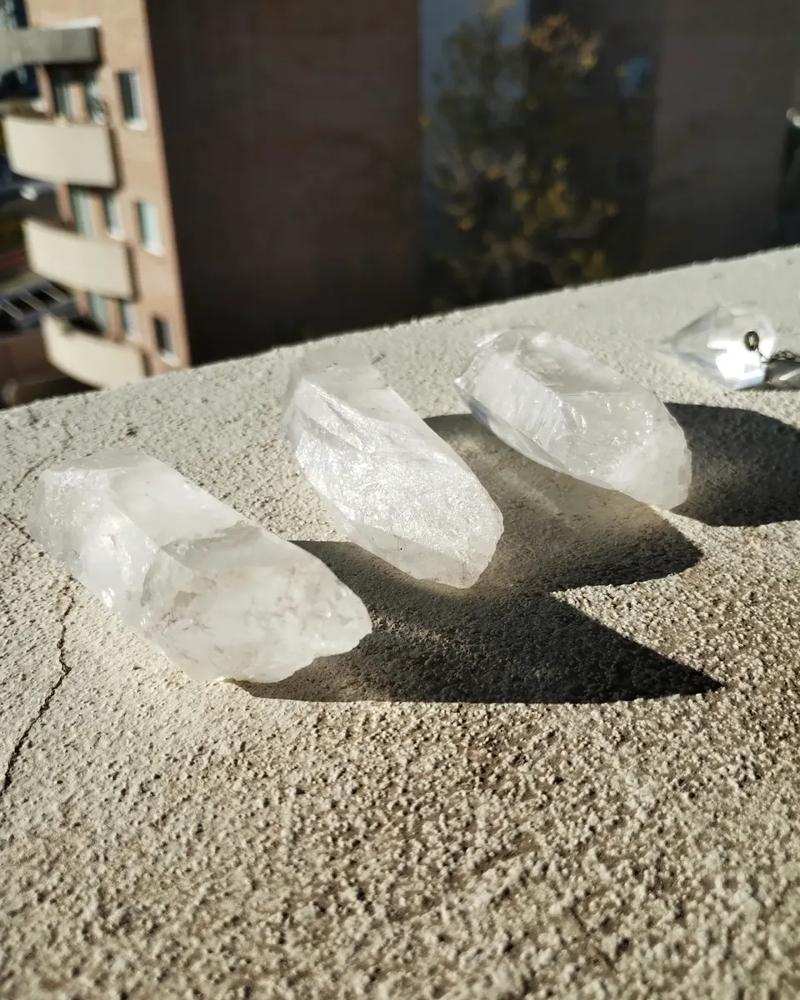
Quién soy
De profesión soy técnica radióloga. Hoy me dedico a acompañar procesos con el tarot, la reflexología podal, el reiki, las limpiezas energéticas, las flores de Bach y las constelaciones familiares.
En Instagram y Facebook comparto mensajes e interactivos de tarot. En el espacio te recibo con turno, de lunes a viernes por la tarde, y también doy capacitaciones y clases online y presenciales.
Servicios y valores
Cada consulta es una forma distinta de mirar lo que te pasa. Elegí la tuya: el valor te lo confirmo cuando reservás.
01 / 07
Dos maneras de leer las cartas.
El de pronóstico mira un tema puntual y hacia dónde se mueve. El terapéutico usa la tirada como espejo, para entender lo que se repite y qué parte tuya lo sostiene.
Se suele pedir cuando
02 / 07
“Para sanar profundamente.”
Mira la trama familiar de la que venís: los lugares, las lealtades y lo que se hereda sin elegirlo. En el espacio se trabaja con figuras de madera que representan a cada integrante.
Se suele pedir cuando
03 / 07
El cielo del momento en que naciste.
Es el mapa del cielo en la fecha, la hora y el lugar exactos de tu nacimiento. Sirve para entender tu manera de funcionar: lo que te mueve, lo que te cuesta y tus tiempos.
Para armarla necesito
04 / 07
Energía, sonido y vibración.
Una sesión de reiki en la camilla, acompañada por el sonido de los cuencos tibetanos. Para aflojar el cuerpo y bajar el ruido de la cabeza.
Se suele pedir cuando
05 / 07
Soltar lo que no es tuyo.
Para cuando sentís que cargás algo que no te pertenece o que tu energía quedó pesada. Me contás la situación y vemos cómo trabajarla.
Se suele pedir cuando
06 / 07
“Para acompañarte en tus procesos.”
Preparados con esencias florales que acompañan estados emocionales como el miedo, la angustia, la impaciencia o el cansancio.
Se suelen pedir cuando
07 / 07
Los pies, un mapa del cuerpo.
Un trabajo con presión sobre los puntos reflejos de los pies, para relajar y acompañar el equilibrio del cuerpo.
Se suele pedir cuando
Lo que conviene saber antes de reservar.
Valores por consulta
El valor depende de la consulta: te lo confirmo por WhatsApp cuando reservás.
Me escribís por WhatsApp o armás tu tirada acá; te respondo con día, horario y valor.
El turno queda reservado con una seña.
Hay 10 minutos de tolerancia. Si no llegás al turno, la seña se pierde y coordinamos otro día.
¿Buscás formarte? También doy capacitaciones y clases, online y presenciales. Preguntame por las próximas.
Las palabras que más se repiten
“Hermosa experiencia la lectura de tarot con Paula, además de ser profundo y acertado su enfoque, me encantó la calidez humana que fue surgiendo en la conversación. Me sentí muy contenida. La súper recomiendo.”
“Me encantó. Me sentí realmente cómoda. Su energía es muy linda. Y en lo personal… fue crudamente hermoso todo lo que salió. Una genia Paula.”
“100% recomendable, super sencilla y tranquila en sus palabras.”
Reservá tu turno
Como en mis interactivos: elegís y yo te respondo. Completá las tres cartas y te queda el mensaje listo para mandarme.
Máximo Salcedo 3568 · Huiliches · Neuquén
Así es el lugar donde te recibo. Todas las fotos y el video son del espacio.
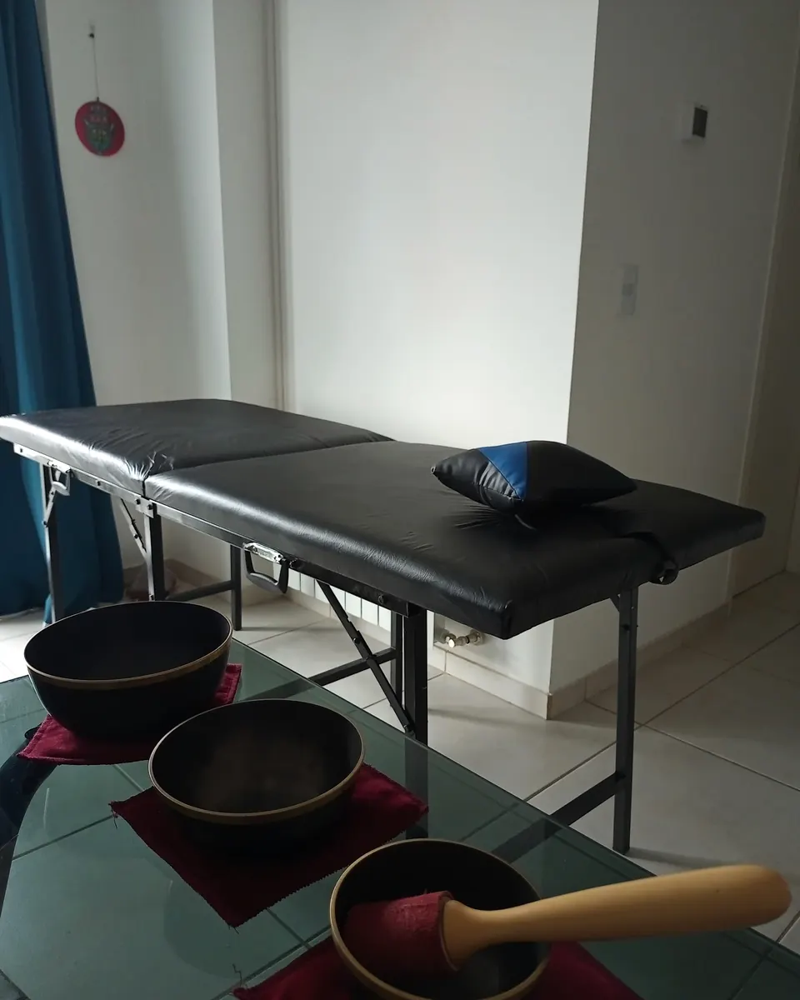
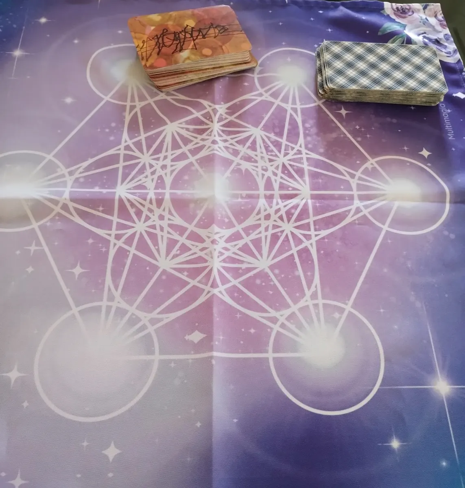
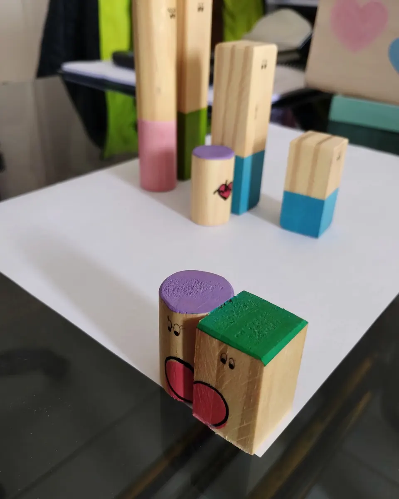
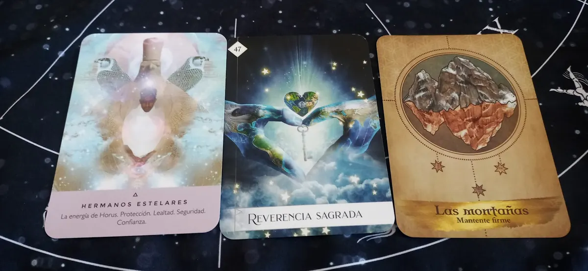
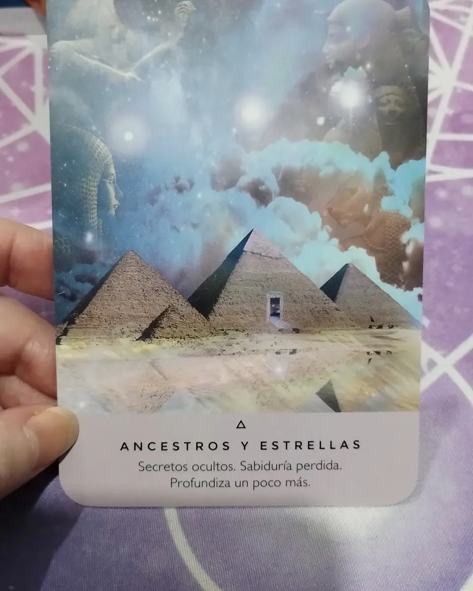
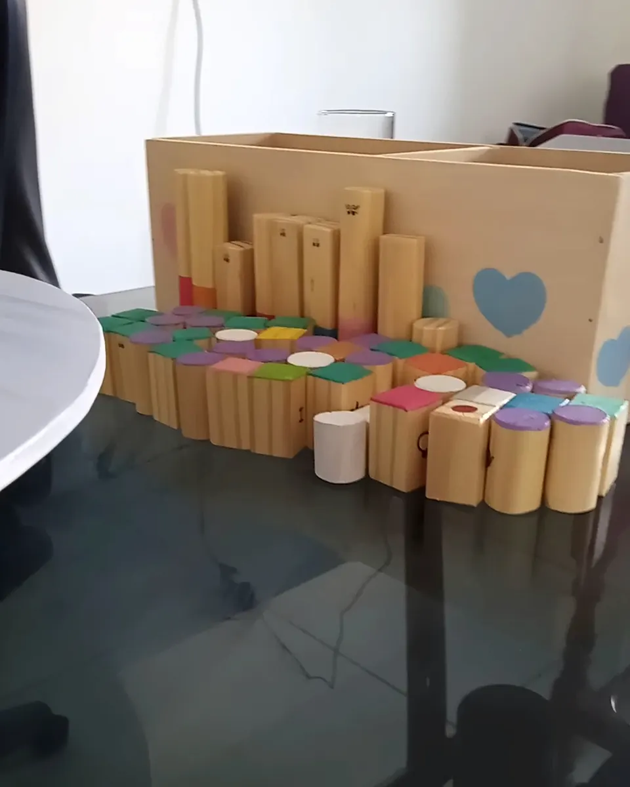
Cuándo
Lunes a viernes
Horario de atención
@espacio.luz.de.conciencia
Así son mis interactivos de tarot en Instagram: elegís una opción y al día siguiente respondo en los comentarios.

¿Qué me está bloqueando para conseguir lo que deseo?
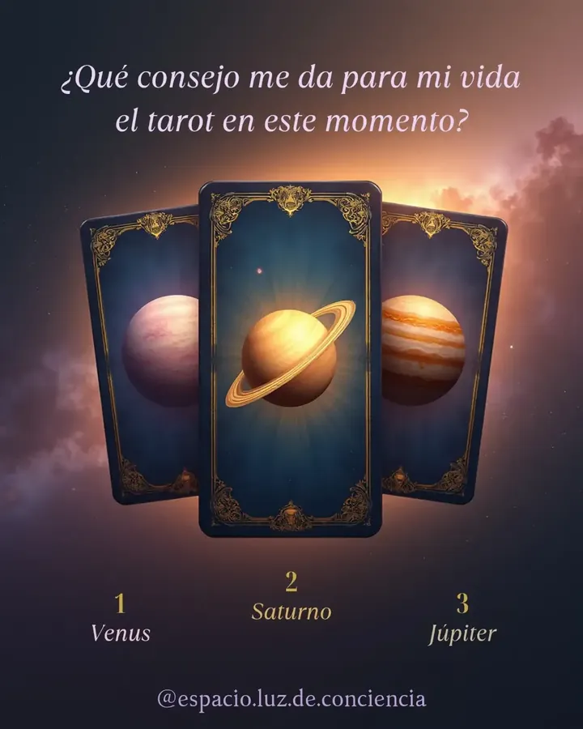
¿Qué consejo me da el tarot para este momento?
¿Qué no me está diciendo la persona X?
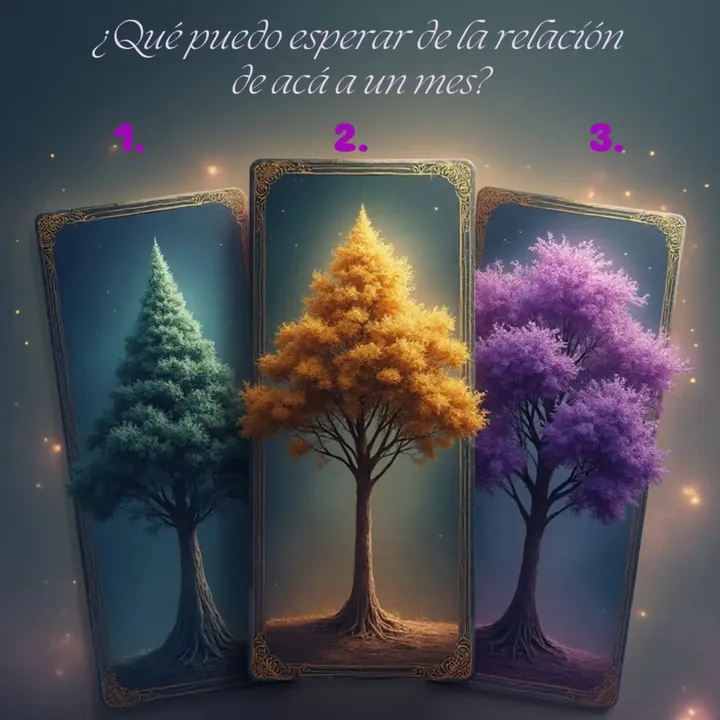
¿Qué puedo esperar de la relación de acá a un mes?
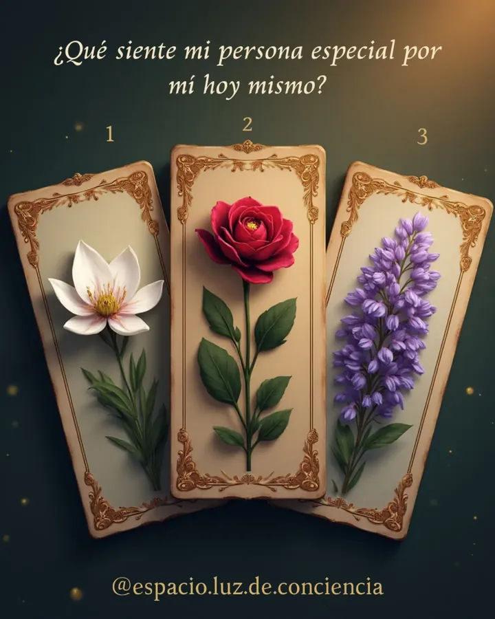
¿Qué siente mi persona especial por mí hoy?
En Instagram respondo cada interactivo en los comentarios. ¿Querés una lectura solo para vos?
En Máximo Salcedo 3568, barrio Huiliches, Neuquén capital. Ver cómo llegar.
De lunes a viernes, de 14:30 a 18:30. Si necesitás otro horario, consultame por WhatsApp.
Escribiéndome por WhatsApp al 299 557-5927 o armando tu tirada en esta página: elegís la consulta y el momento, y me mandás el mensaje. El turno queda reservado con una seña.
Hay 10 minutos de tolerancia. Si no llegás al turno, la seña se pierde, pero podemos coordinar otro día.
El valor depende de la consulta. Te lo paso por WhatsApp cuando reservás. Por el Día de la Madre hay 15% OFF en todos los servicios con el código TEAMOMAMI.
El de pronóstico mira un tema puntual y hacia dónde se mueve. El terapéutico no busca adivinar: usa la tirada como espejo, para entender lo que se repite y abrir otra salida.
Tres: fecha, hora y lugar de nacimiento. La hora conviene que sea lo más exacta posible: figura en la partida de nacimiento.
Sí, doy capacitaciones y clases, online y presenciales. Preguntame por WhatsApp por las próximas fechas.